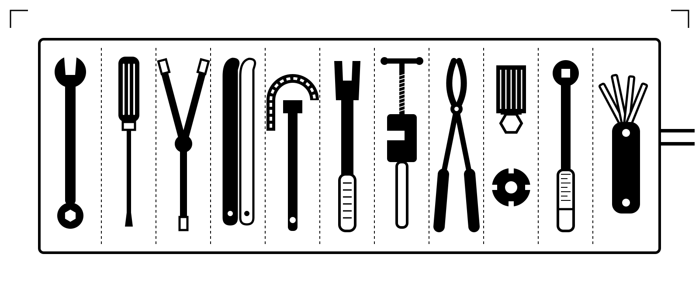
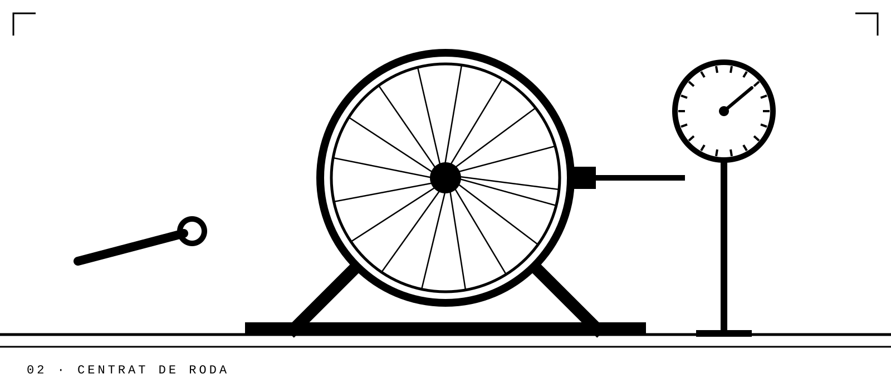
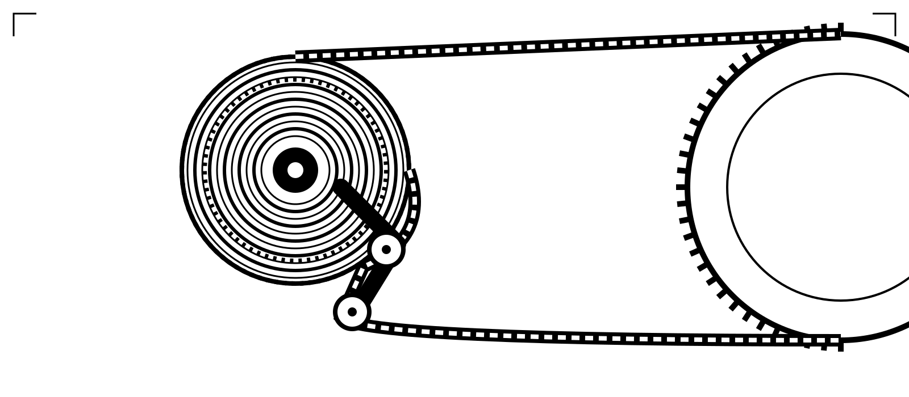
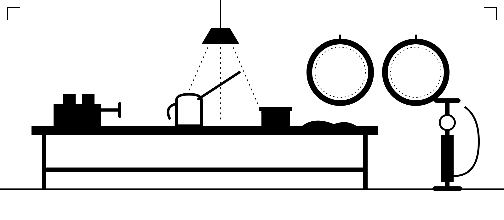
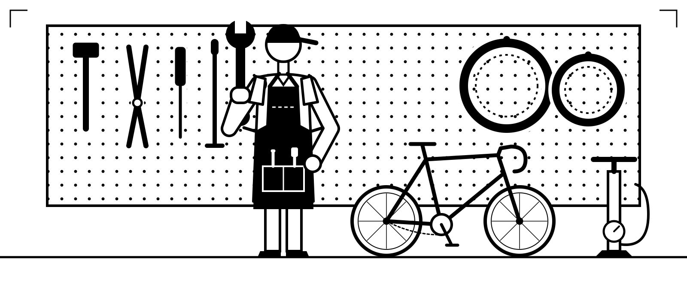

Fem tota mena de reparacions i manteniment, des d’una punxada ràpida fins a desmuntar-la sencera i tornar-la a muntar. Carretera, gravel, muntanya, elèctrica, de ciutat o una clàssica d’acer de fa quaranta anys: si té rodes i pedals, ens en farem càrrec.
Totes les bicis reben la mateixa cura: les netegem, les revisem cargol a cargol, les ajustem fins que no fan ni un soroll i les provem abans que les vinguis a buscar. Estàs de pas en un viatge? Digues-nos-ho i et tornarem a la carretera tan aviat com puguem.
Preus de mà d’obra, IVA inclòs. Les peces es cobren a part, i sempre et preguntem abans de muntar-ne cap.
A la primavera hi ha molta feina, així que reserva amb una o dues setmanes d’antelació.
Envia’ns la bici, el problema i una foto si pots. Normalment responem el mateix dia.